Code
library(tidyverse)
library(factoextra)
library(cluster)
library(dbscan)
library(NbClust)
library(GGally) # for parallel coordinate plots
set.seed(4321)By the end of this section, you will be able to:
library(tidyverse)
library(factoextra)
library(cluster)
library(dbscan)
library(NbClust)
library(GGally) # for parallel coordinate plots
set.seed(4321)data(iris)
iris_num <- iris %>% select(where(is.numeric))
iris_scaled <- scale(iris_num)
head(iris_scaled) Sepal.Length Sepal.Width Petal.Length Petal.Width
[1,] -0.8976739 1.01560199 -1.335752 -1.311052
[2,] -1.1392005 -0.13153881 -1.335752 -1.311052
[3,] -1.3807271 0.32731751 -1.392399 -1.311052
[4,] -1.5014904 0.09788935 -1.279104 -1.311052
[5,] -1.0184372 1.24503015 -1.335752 -1.311052
[6,] -0.5353840 1.93331463 -1.165809 -1.048667We extract the numeric features of the Iris dataset and scale them so that all variables contribute equally. Scaling is crucial because distance-based clustering is sensitive to variable magnitude.
pca <- prcomp(iris_scaled)
fviz_pca_ind(pca, geom="point", title="PCA Visualization of Iris")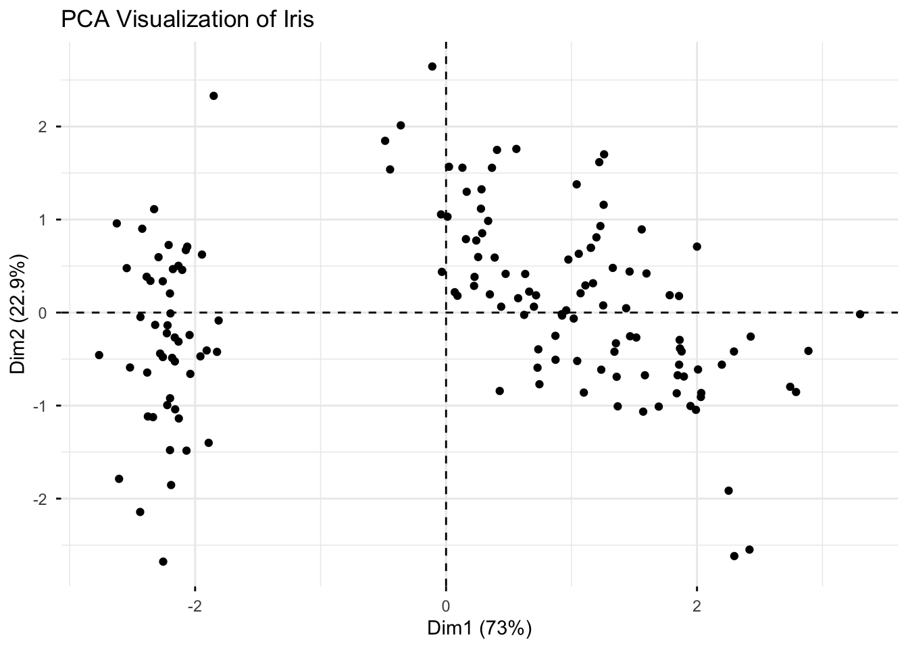
A PCA scatterplot allows us to see the structure of high-dimensional data in two dimensions. If clusters exist naturally, PCA often reveals them visually.
fviz_nbclust(iris_scaled, kmeans, method="wss") +
labs(title="Elbow Method (WSS vs k)")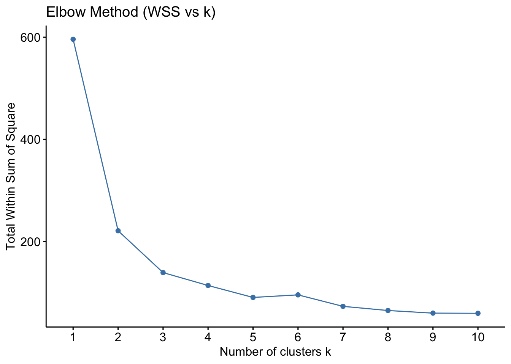
The elbow plot shows how total within-cluster variation decreases as k increases.
We select the k where improvement slows down — the “elbow.”
fviz_nbclust(iris_scaled, kmeans, method="silhouette") +
labs(title="Silhouette Method")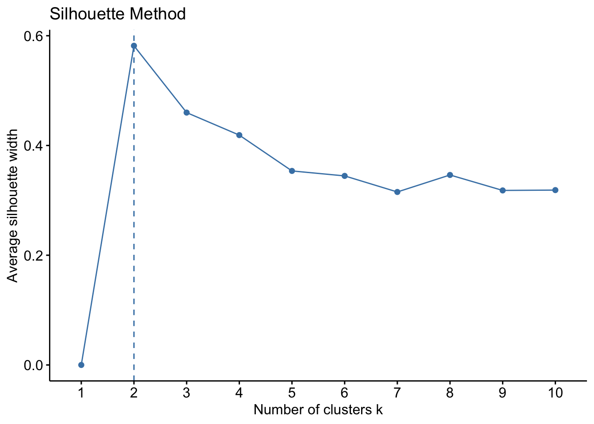
The silhouette method evaluates how well-separated clusters are.
Higher values indicate clearer boundaries. The optimal k maximizes silhouette width.
set.seed(4321)
gap <- clusGap(iris_scaled, FUN=kmeans, nstart=25, K.max=10, B=30)
fviz_gap_stat(gap)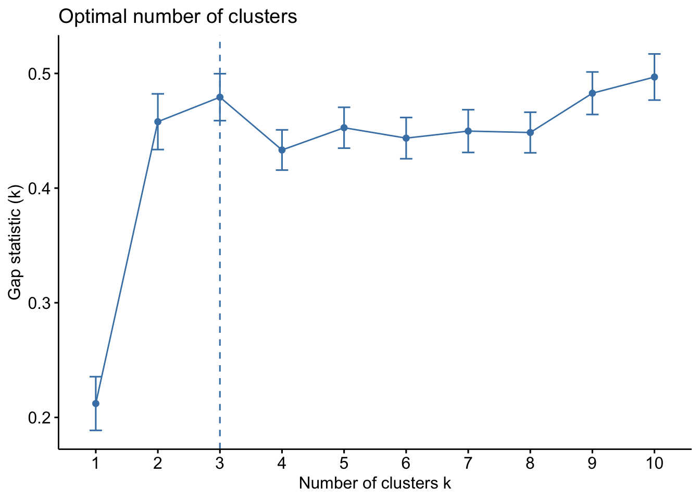
The gap statistic compares cluster dispersion to what would be expected if no clustering existed.
A large “gap” indicates strong underlying cluster structure.
set.seed(4321)
nb_res <- NbClust(iris_scaled, distance="euclidean",
min.nc=2, max.nc=10, method="kmeans")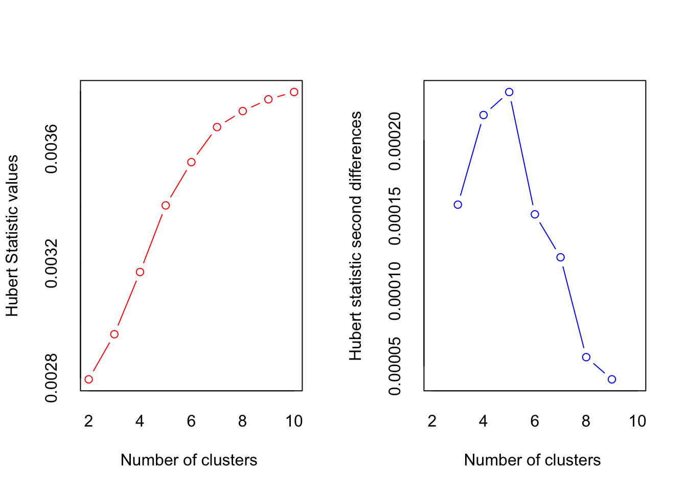
*** : The Hubert index is a graphical method of determining the number of clusters.
In the plot of Hubert index, we seek a significant knee that corresponds to a
significant increase of the value of the measure i.e the significant peak in Hubert
index second differences plot.
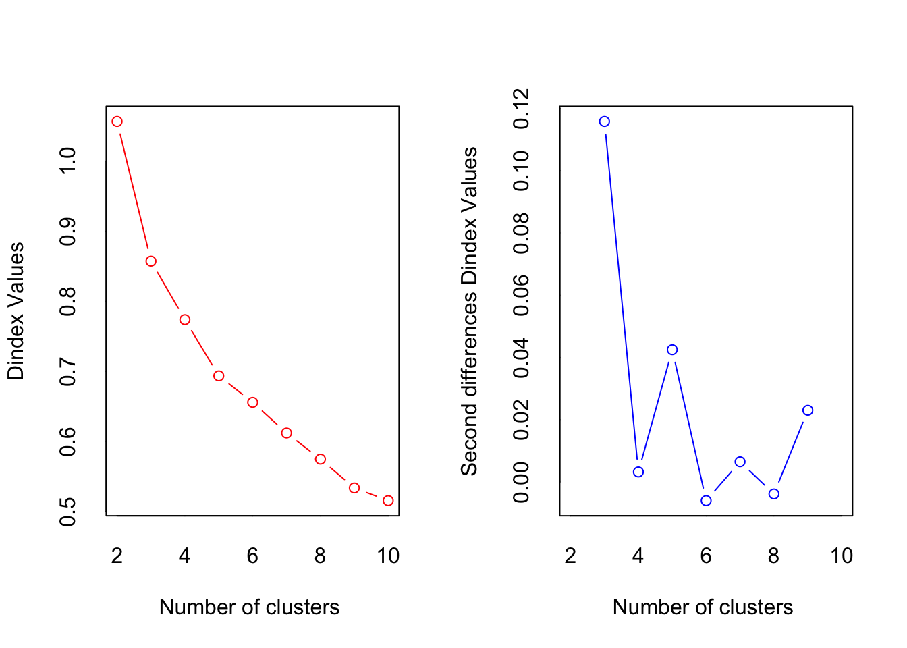
*** : The D index is a graphical method of determining the number of clusters.
In the plot of D index, we seek a significant knee (the significant peak in Dindex
second differences plot) that corresponds to a significant increase of the value of
the measure.
*******************************************************************
* Among all indices:
* 11 proposed 2 as the best number of clusters
* 10 proposed 3 as the best number of clusters
* 1 proposed 4 as the best number of clusters
* 1 proposed 6 as the best number of clusters
* 1 proposed 10 as the best number of clusters
***** Conclusion *****
* According to the majority rule, the best number of clusters is 2
******************************************************************* best_k <- nb_res$Best.nc[1]
best_k[1] 3vote_dist <- as.data.frame(table(nb_res$Best.nc[1, ]))
ggplot(vote_dist, aes(Var1, Freq)) +
geom_col(fill="steelblue") +
labs(title="NbClust: Votes for k")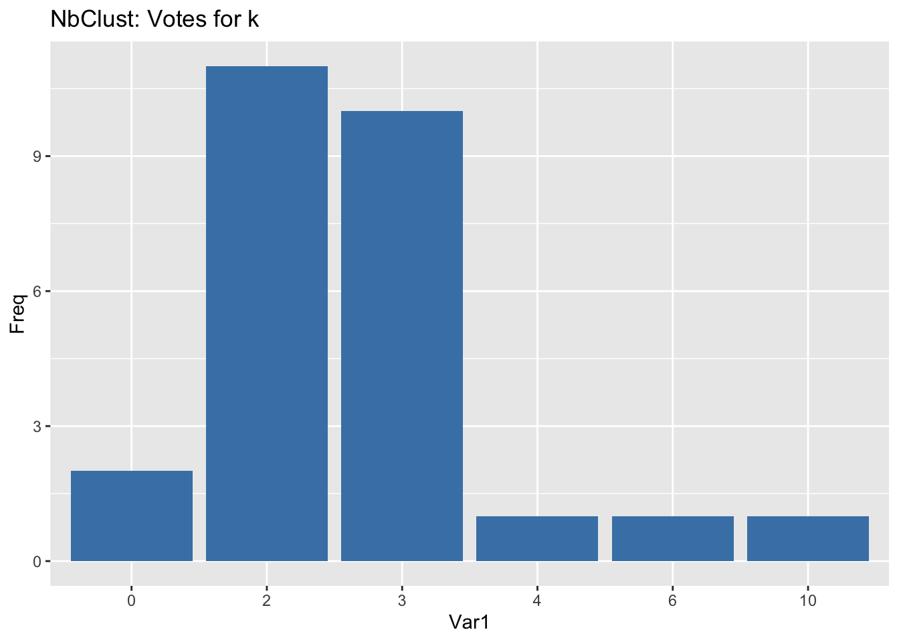
NBClust computes 30+ indices to recommend the number of clusters.
We visualize the vote distribution and use the majority vote.
kmeans_fit <- kmeans(iris_scaled, centers = best_k, nstart=30)
fviz_cluster(kmeans_fit, iris_scaled,
main=paste("K-means Clusters (k=", best_k, ")", sep=""))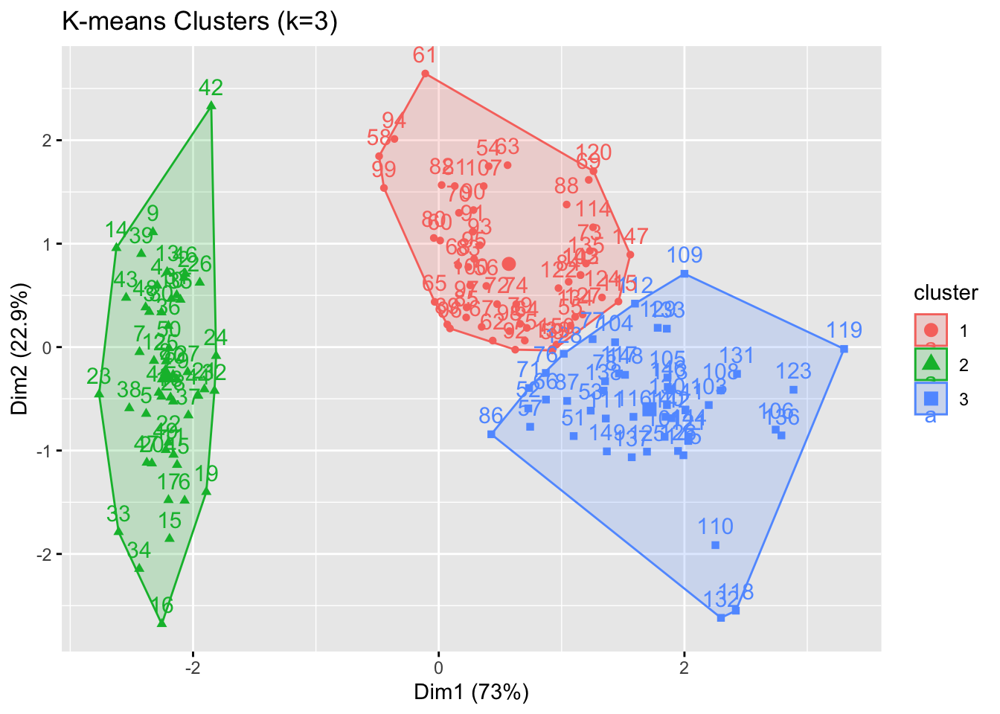
K-means partitions data into spherical clusters using centroids.
The PCA visualization shows how those clusters look in reduced space.
table(KMeans = kmeans_fit$cluster, Species = iris$Species) Species
KMeans setosa versicolor virginica
1 0 39 14
2 50 0 0
3 0 11 36This table shows how well K-means clusters match the true species.
K-means typically identifies Setosa perfectly but overlaps Versicolor and Virginica.
iris_km <- iris_num %>% mutate(Cluster = factor(kmeans_fit$cluster))
GGally::ggparcoord(iris_km, columns = 1:4, groupColumn = "Cluster",
title="Parallel Coordinates: K-means Clusters")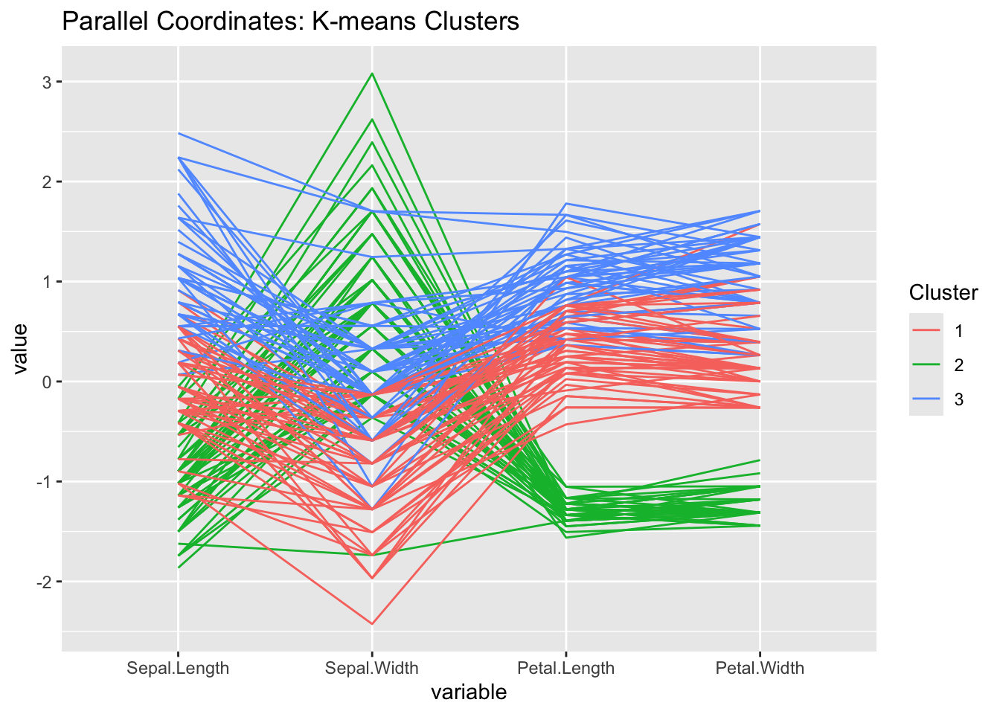
Parallel coordinate plots show variable profiles across clusters.
K-means clusters should show distinct shape patterns if clustering is meaningful.
d <- dist(iris_scaled)
hc_complete <- hclust(d, method="complete")
fviz_dend(hc_complete, k=3, rect=TRUE,
main="Hierarchical Clustering (Complete Linkage)")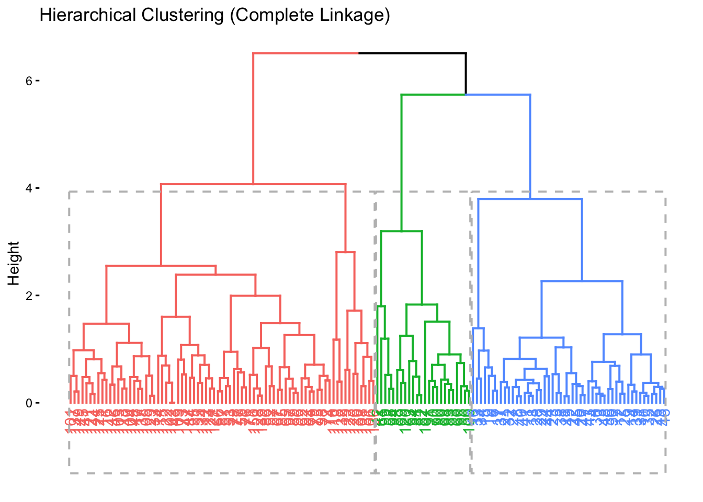
Hierarchical clustering builds a tree structure showing merging of points/clusters.
Cutting the dendrogram at height = 3 yields three clusters.
hc_clusters <- cutree(hc_complete, k=3)
table(Hierarchical = hc_clusters, Species = iris$Species) Species
Hierarchical setosa versicolor virginica
1 49 0 0
2 1 21 2
3 0 29 48Hierarchical clustering does not require pre-specifying k — we “cut” the dendrogram.
This table shows how hierarchical groupings align with real species.
fviz_cluster(list(data=iris_scaled, cluster=hc_clusters),
geom="point",
main="Hierarchical Clusters (k=3)")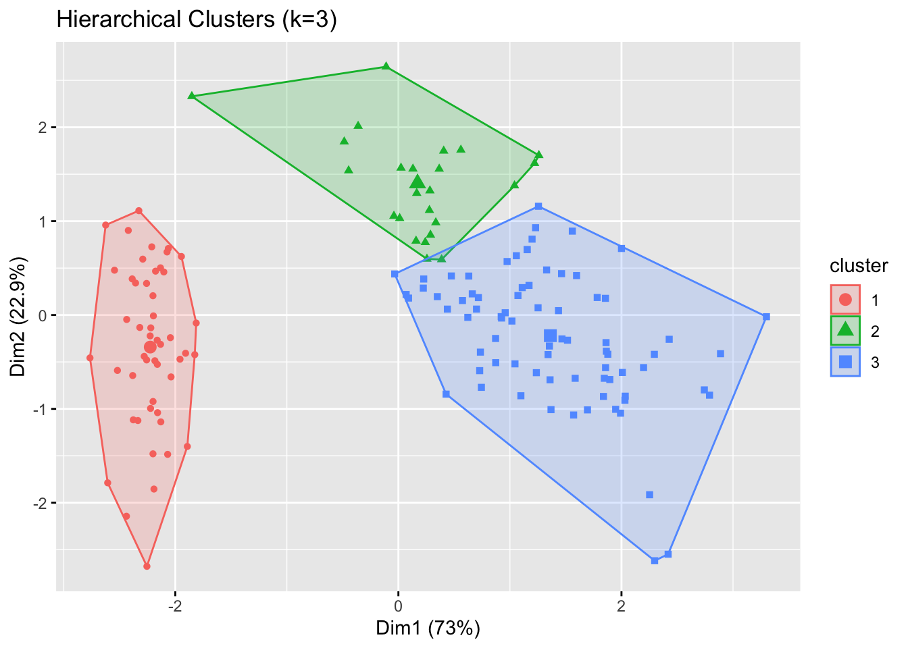
A PCA scatterplot shows how hierarchical clusters spread in low-dimensional space.
Complete linkage tends to produce compact clusters.
iris_hc <- iris_num %>% mutate(Cluster = factor(hc_clusters))
GGally::ggparcoord(iris_hc, columns = 1:4, groupColumn = "Cluster",
title="Parallel Coordinates: Hierarchical Clusters")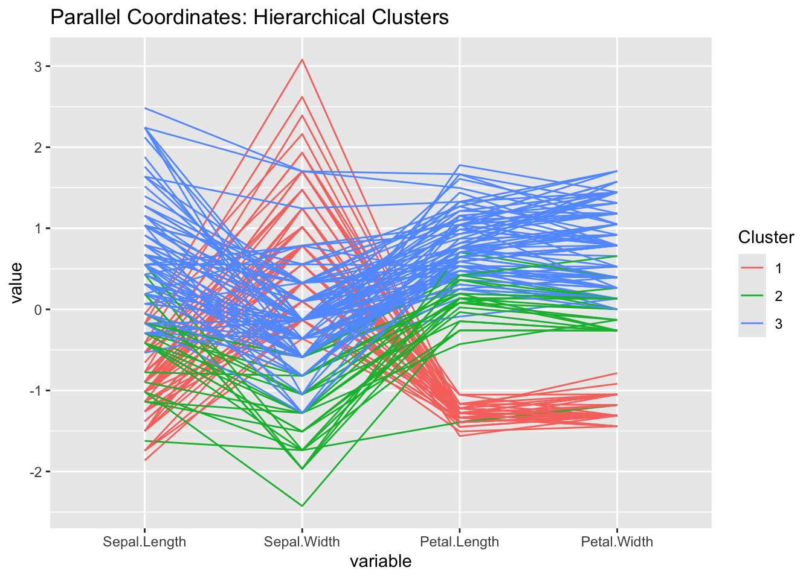
Parallel coordinates allow us to compare variable patterns across hierarchical clusters.
minPts <- 2 * ncol(iris_scaled)
kNNdistplot(iris_scaled, k=minPts)
abline(h=0.9, lty=2)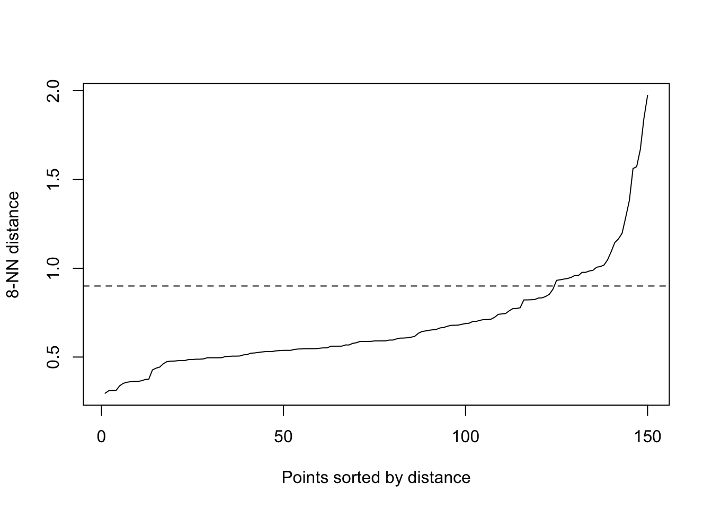
The kNN plot helps choose eps by showing the distance to each point’s k-th neighbor.
The “knee” in the curve is the suggested eps threshold.
db_fit <- dbscan(iris_scaled, eps=0.9, minPts=minPts)
db_fitDBSCAN clustering for 150 objects.
Parameters: eps = 0.9, minPts = 8
Using euclidean distances and borderpoints = TRUE
The clustering contains 2 cluster(s) and 7 noise points.
0 1 2
7 48 95
Available fields: cluster, eps, minPts, metric, borderPointsDBSCAN groups high-density regions and labels low-density points as noise (cluster 0).
fviz_cluster(list(data=iris_scaled, cluster=db_fit$cluster),
geom="point",
ellipse.type="convex",
main="DBSCAN Clusters")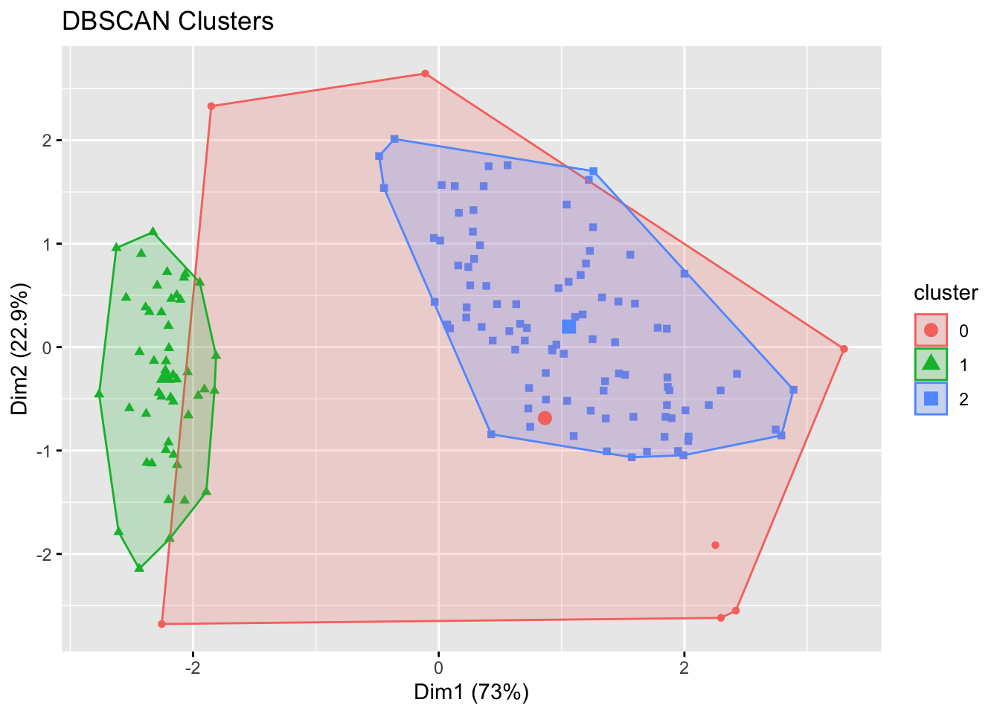
DBSCAN finds arbitrary-shaped clusters that density-based methods capture better than K-means.
table(DBSCAN = db_fit$cluster, Species = iris$Species) Species
DBSCAN setosa versicolor virginica
0 2 1 4
1 48 0 0
2 0 49 46DBSCAN often segments Setosa well but may merge Versicolor and Virginica depending on eps.
iris_db <- iris_num %>% mutate(Cluster = factor(db_fit$cluster))
GGally::ggparcoord(iris_db, columns = 1:4, groupColumn = "Cluster",
title="Parallel Coordinates: DBSCAN Clusters")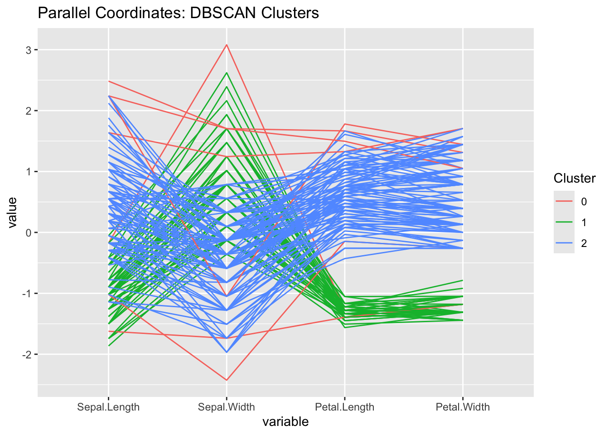
Parallel coordinates show how DBSCAN clusters differ in variable space and highlight noise points.